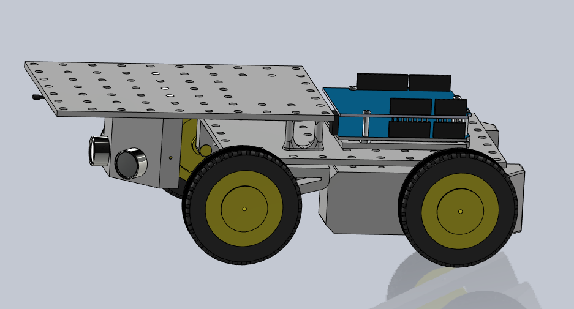
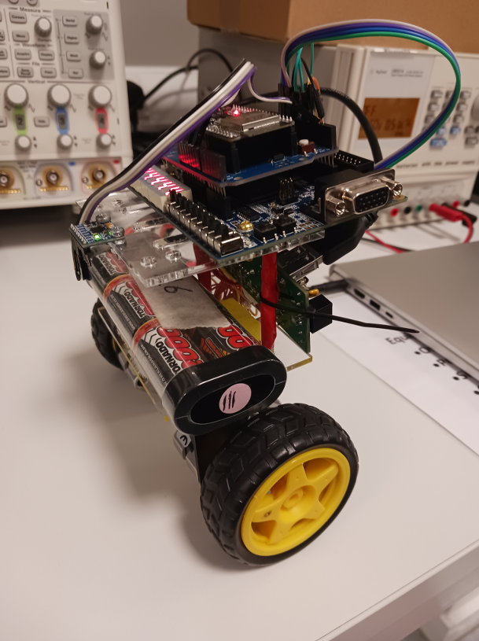
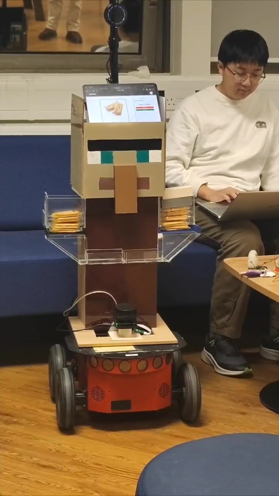

Project Portfolio
Autonomous Moon Rover

This project involved the development of an autonomous rover system capable of navigating rough terrain while identifying and classifying rock samples using radiation and ultrasound sensing technologies.
The rover integrated embedded systems, sensor fusion, robotics control, and autonomous navigation algorithms for environmental exploration tasks.
Self-Balancing Maze Solving Robot

Developed a two-wheel self-balancing robot capable of autonomous maze exploration and navigation. The system combined dynamic balancing control with mapping and path-planning algorithms.
The project focused heavily on feedback control systems, IMU processing, real-time robotics behaviour, and autonomous decision-making.
BIM AI Companion Robot

Designed and developed an AI-powered robotic companion intended to provide assistance and interaction for elderly individuals.
The project explored human-robot interaction, intelligent behaviour, emotional engagement systems, and assistive robotics technologies.
Movendor Smart Robotic Vendor

Movendor is a mobile robotic vending platform capable of navigating both indoor and outdoor environments while interacting with potential customers using AI-driven perception systems.
The robot was designed for autonomous movement, customer detection, product promotion, and smart interaction within public spaces.
Neuroevolution Robotics System

This research project focused on training robotic systems using neuroevolution strategies and modular neural network architectures within simulated 2D and 3D environments.
The work explored co-evolution methods, evolutionary computation, reinforcement learning concepts, and adaptive robotic intelligence.